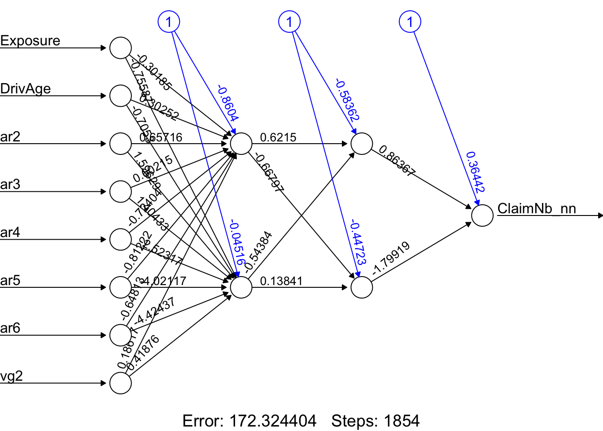
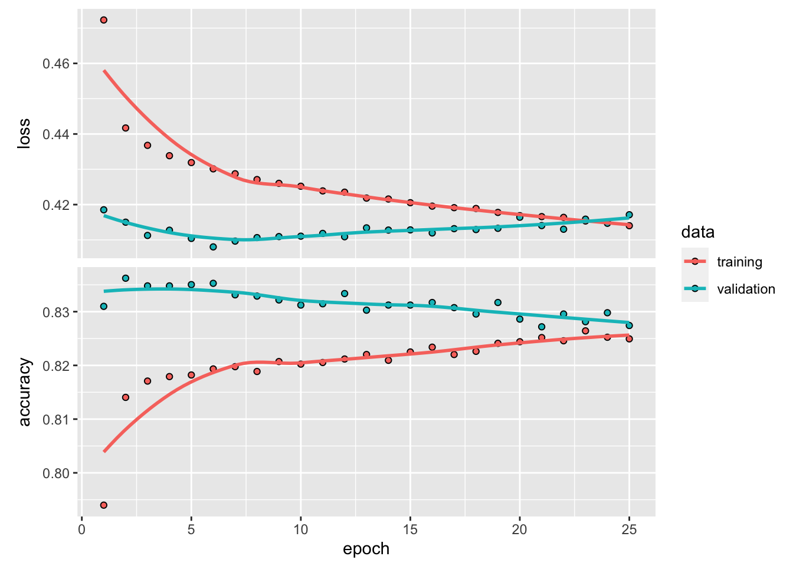
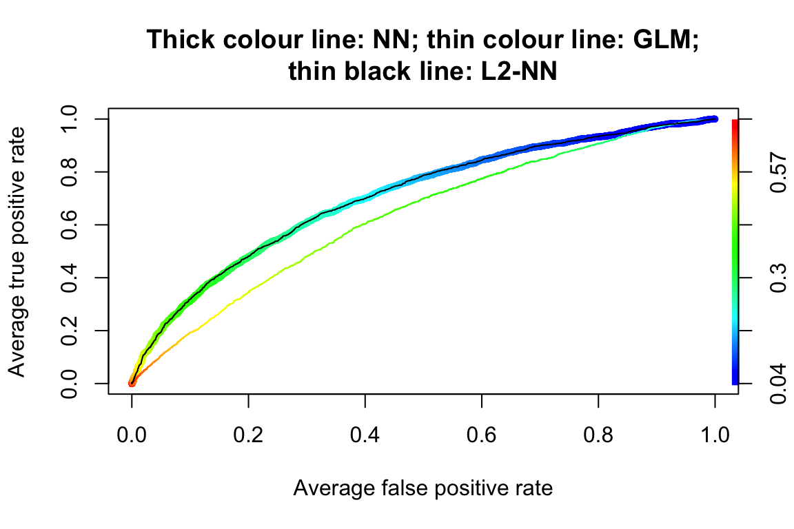

# Load required packages
library(neuralnet) # Neural network modelling
library(tidyverse)
library(ROCR) # AUC plot
library(kableExtra) # Tables
library(here)Lab: Neural Networks
Actuarial Data Science - Open Learning Resource
Learning Objectives
Train neural networks in R using various packages for both classification and regression tasks.
Improve neural network performance through tuning by understanding the associated tuning parameters and applying techniques such as early stopping, dropout, and weight regularisation.
Neural Network Packages in R
This week covers two case studies: one focused on a regression problem and the other on a classification problem. We introduce two packages for implementing neural networks:
neuralnet(): A classical package that is particularly well suited for beginners due to its simplicity and user-friendliness (from theneuralnetpackage).keras: Originally developed in Python, the R interface tokerasprovides a user-friendly framework for designing and training neural networks, along with extensive customisation options.
In addition, there are several other useful packages for working with neural networks, including h2o and caret.
A Regression Problem
Data Manipulation
The data used in this case study are a subset of freMTPL2freq from the CASdatasets package.
In freMTPL2freq, risk features and claim counts were collected for 677,991 motor third-party liability insurance policies observed over one year. In this lab, we consider a subset of the data containing 40,000 observations for training and 10,000 observations for testing. Our task is to predict the number of claims.
freMTPL2freq contains 12 columns (including IDpol):
IDpol: The policy ID (used to link with the claims dataset).ClaimNb: Number of claims during the exposure period.Exposure: The exposure period.Area: The area code.VehPower: The power of the car (ordered categorical variable).VehAge: The vehicle age, measured in years.DrivAge: The driver age, measured in years (in France, people can drive from age 18).BonusMalus: Bonus/malus level, ranging from 50 to 350, where 100 represents the baseline level in France.VehBrand: The car brand (unknown categories).VehGas: The fuel type of the car (diesel or regular).Density: The population density (number of inhabitants per km(^2)) of the city where the driver lives.Region: The policy region in France (based on a standard French classification).
Import Data
# Load the training and test datasets
load(here("Labs", "Lab-Models", "Lab-NeuralNetworks", "Train-set.Rdata"))
load(here("Labs", "Lab-Models", "Lab-NeuralNetworks", "Test-set.Rdata"))
traindata <- newtrain
testdata <- newtest
# Check the structure of the training data
# str(traindata)Data Normalisation for Numeric Variables
One of the most important preprocessing steps when training a neural network is data normalisation. This involves transforming the data onto a common scale so that the model can effectively compare and learn from the input variables. Failure to normalise the data may result in poor model performance, such as predictions remaining very similar across observations regardless of the input values.
There are several ways to normalise data in R:
Scale the variables automatically using the
scale()function.Transform the variables using a min-max normalisation technique.
In this lab, we use the min-max normalisation technique. This transformation rescales all numeric variables to the range [0,1].
Note that the test data are normalised using the minimum and maximum values computed from the training data. Since the test set should be treated as unseen data, information from the test set itself should not be used during the normalisation process.
normalize <- function(x) {
(x - min(x)) / (max(x) - min(x))
}
# For the training set, x is the variable itself.
normalizetest <- function(x, y) {
(x - min(y)) / (max(y) - min(y))
}
# For the test set:
# x is the variable from the test set,
# y is the corresponding variable from the training set.
# Exposure
testdata$Exposure <- normalizetest(testdata$Exposure, traindata$Exposure)
traindata$Exposure <- normalize(traindata$Exposure)
# Driver age
testdata$DrivAge <- normalizetest(testdata$DrivAge, traindata$DrivAge)
traindata$DrivAge <- normalize(traindata$DrivAge)
# BonusMalus
testdata$BonusMalus <- normalizetest(testdata$BonusMalus, traindata$BonusMalus)
traindata$BonusMalus <- normalize(traindata$BonusMalus)
# Density (log-transformed before normalisation)
testdata$Density <- normalizetest(
log(testdata$Density),
log(traindata$Density)
)
traindata$Density <- normalize(log(traindata$Density))
# Vehicle power
testdata$VehPower <- normalizetest(testdata$VehPower, traindata$VehPower)
traindata$VehPower <- normalize(traindata$VehPower)
# Vehicle age
testdata$VehAge <- normalizetest(testdata$VehAge, traindata$VehAge)
traindata$VehAge <- normalize(traindata$VehAge)
# Response variable
# We only scale ClaimNb for neural network fitting, so we create a new column.
traindata <- traindata %>%
mutate(ClaimNb_nn = normalize(ClaimNb))Dummy Coding for Categorical Variables
The idea is to transform each categorical variable into several dummy variables taking values 0 or 1. In the function below, the first category is treated as the reference category, and dummy variables are created for the remaining categories.
Dummy <- function(var1, short, dat2) {
names(dat2)[names(dat2) == var1] <- "V1"
n2 <- ncol(dat2)
dat2$X <- as.integer(dat2$V1)
n0 <- length(unique(dat2$X))
for (n1 in 2:n0) {
dat2[, paste(short, n1, sep = "")] <- as.integer(dat2$X == n1)
}
names(dat2)[names(dat2) == "V1"] <- var1
dat2[, c(1:n2, (n2 + 2):ncol(dat2))]
}
# Area
unique(traindata$Area)[1] A E C D B F
Levels: A B C D E Ftraindata <- Dummy("Area", "ar", traindata)
testdata <- Dummy("Area", "ar", testdata)
# Area categories:
# ar2 = B, ar3 = C, ar4 = D, ar5 = E, ar6 = F
# Area A is the reference category.
# Vehicle brand
unique(traindata$VehBrand) [1] B1 B2 B13 B3 B4 B12 B11 B10 B5 B14 B6
Levels: B1 B10 B11 B12 B13 B14 B2 B3 B4 B5 B6traindata <- Dummy("VehBrand", "vb", traindata)
testdata <- Dummy("VehBrand", "vb", testdata)
# Vehicle gas
unique(traindata$VehGas)[1] Regular Diesel
Levels: Diesel Regulartraindata <- Dummy("VehGas", "vg", traindata)
testdata <- Dummy("VehGas", "vg", testdata)
# VehGas categories:
# vg2 = Regular
# Diesel is the reference category.Training a Neural Network Model
To train a neural network, we use the neuralnet() function.
Notes:
We use
neuralnet()to regress the dependent variableClaimNb_nnon the explanatory variables. Here, feature selection should also be considered.We set the hidden layer structure to
(2, 2)usinghidden = c(2, 2), which means the model has two hidden layers with two neurons in each layer.The
linear.outputargument is set toTRUEfor a regression problem. For a classification problem, it is usually set toFALSE. Whenlinear.output = FALSE, the activation function can be specified usingact.fct. For example,act.fct = "logistic"uses the logistic function, andact.fct = "tanh"uses the hyperbolic tangent function.The
err.fctargument defines the differentiable error function used to calculate the model error. Common choices include"sse"for the sum of squared errors and"ce"for cross-entropy.The
thresholdis set to 0.05. This means that if the partial derivatives of the error function are smaller than this threshold, the optimisation process stops. The argumentstepmaxprovides another stopping criterion by setting the maximum number of steps.There are several choices for the
algorithmargument. For example,"backprop"refers to backpropagation, while"rprop+"and"rprop-"refer to resilient backpropagation with and without weight backtracking, respectively.Deciding on the number of hidden layers and neurons is not an exact science. In some cases, a simpler model with fewer hidden layers may perform better. Therefore, trial and error often plays an important role. One approach is to compare how predictive performance changes as we modify the network structure.
# Neural network model
# Note that ClaimNb_nn is the normalised response variable.
nn <- neuralnet(
ClaimNb_nn ~ Exposure + DrivAge + ar2 + ar3 + ar4 + ar5 + ar6 + vg2,
data = traindata,
hidden = c(2, 2),
linear.output = TRUE,
threshold = 0.05,
algorithm = "rprop+"
)
# nn$result.matrix
plot(nn, rep = "best")
# GLM benchmark model
# Note that the original ClaimNb is used as the response variable.
nnglm <- glm(
ClaimNb ~ Exposure + DrivAge + ar2 + ar3 + ar4 + ar5 + ar6 + vg2,
data = traindata,
family = poisson(link = "log")
)Testing the Accuracy of the Model
As mentioned earlier, the neural network has been trained using the training data. We now apply it to the test data to assess its predictive performance. Note that, for the neural network, the predicted values need to be back-scaled to their original scale.
# Test the resulting output
Xtest <- select(
testdata,
c("Exposure", "DrivAge", "ar2", "ar3", "ar4", "ar5", "ar6", "vg2")
)
# Neural network predictions
nn.results <- neuralnet::compute(nn, Xtest)
# Back-scale the predicted values using the min and max of the response variable
# from the training set. Think about why we use the training set here.
original_nn <- nn.results$net.result *
(max(traindata$ClaimNb) - min(traindata$ClaimNb)) +
min(traindata$ClaimNb)
# GLM predictions
glm.results <- predict(nnglm, newdata = Xtest, type = "response")
results <- data.frame(
actual = testdata$ClaimNb,
nn.prediction = original_nn,
glm.prediction = glm.results
)
# Test MSE
mse <- data.frame(
nn.mse = mean((results$actual - results$nn.prediction)^2),
glm.mse = mean((results$actual - results$glm.prediction)^2)
)
mseThe neural network performs worse than the GLM in this example. One possible reason is that we have not tuned the neural network parameters.
A Classification Problem
In this section, we revisit the credit dataset introduced earlier in the lab. Our goal is to train neural networks using the tensorflow and keras packages. TensorFlow is a powerful open-source platform for machine learning, while Keras provides a flexible and user-friendly interface for building and training neural networks with a wide range of architectures and customisation options. We begin with a simple neural network architecture.
Installation of Required Packages
- Install Python 3.9.10: Both
kerasandtensorflowdepend on Python. To improve compatibility with these packages and their dependencies, it is recommended to install an older stable version of Python rather than the latest release. From experience, Python 3.9.10 works well. You can download Python either from the official Python website or directly download Python 3.9.10. Make sure to choose the correct version for your operating system.- Alternatively, you can use the
install_python()function from thereticulatepackage:
- Alternatively, you can use the
reticulate::install_python()Install Visual Studio Redistributable (Windows Only) : For Windows users, install the required Visual Studio redistributable packages from this Microsoft link.
Installation and Setup in R:
- First, install and load the
reticulatepackage, which enables communication between R and Python. - Next, install the R packages
tensorflowandkeras. The functioninstall_tensorflow()installs the TensorFlow Python package and its direct dependencies. Similarly,install_keras()installs the required Keras dependencies.
- First, install and load the
# This code chunk will be displayed but not executed
install.packages("reticulate")
install.packages("tensorflow")
install.packages("keras")
library(reticulate)
library(tensorflow)
install_tensorflow()
library(keras)
install_keras()
Advanced Installation Notes (Optional)
If the default installation does not work, you may need to manually specify a Python virtual environment or install a specific TensorFlow version together with additional dependencies.
The following example demonstrates one possible setup configuration:
# Example for manually specifying a virtual environment:
# library(reticulate)
# use_virtualenv("/home/feihuang/.virtualenvs/r-tensorflow",
# required = TRUE
# )
# Example of installing a specific TensorFlow version:
# tensorflow::install_tensorflow(
# version = "2.13.1", # Last available version from PyPI per your earlier logs
# extra_packages = c(
# "tensorflow-hub",
# "tensorflow-datasets",
# "scipy",
# "requests",
# "Pillow",
# "h5py",
# "pandas",
# "pydot"
# )
# )After running the commands above, TensorFlow and Keras should be integrated into your R environment and ready for use.
If you encounter installation issues, previous installations of Python or related packages may be causing conflicts. In such cases, reinstalling Python and the associated packages may help resolve the problem.
Data Preparation
library(keras)
library(tensorflow)
library(here)
load(here("Labs", "Lab-Models", "Lab-NeuralNetworks", "train_credit.Rdata"))
load(here("Labs", "Lab-Models", "Lab-NeuralNetworks", "test_credit.Rdata"))
# Alternative loading approach:
# load("Labs/Lab-Models/Lab-NeuralNetworks/train_credit.Rdata") # 70%
# load("Labs/Lab-Models/Lab-NeuralNetworks/test_credit.Rdata") # 30%
num_var <- c(1, 5, 12:23)
train_data_label <- as.numeric(xtrain0$default) - 1
train_feature <- xtrain0[, -24]
test_feature <- xtest0[, -24]
# Standardise numeric features
mean <- colMeans(train_feature[, num_var])
std <- apply(train_feature[, num_var], 2, sd)
train_feature[, num_var] <- scale(
train_feature[, num_var],
center = mean,
scale = std
)
test_feature[, num_var] <- scale(
test_feature[, num_var],
center = mean,
scale = std
)Instead of using min-max normalisation, we standardise the numerical features using the scale() function. This transformation centres the variables around zero and rescales them to have unit variance.
Note that the test features are standardised using the mean and standard deviation computed from the training features. This helps minimise the risk of data leakage.
Developing the Network Architecture
train_feature <- as.data.frame(model.matrix(~ 0 + ., data = train_feature))
test_feature <- as.data.frame(model.matrix(~ 0 + ., data = test_feature))
# Define the model architecture
nn1 <- keras_model_sequential() %>%
layer_dense(
units = 20,
activation = "relu",
input_shape = ncol(train_feature)
) %>%
layer_dense(
units = 10,
activation = "relu"
) %>%
layer_dense(
units = 1,
activation = "sigmoid"
)In the keras package, we can construct a neural network using a layered approach. Here, the model is defined as a sequential neural network using the keras_model_sequential() function. When designing the architecture of a neural network, two key components require attention:
Layers and Nodes
Activation Functions
Layers and Nodes
This network architecture contains two hidden layers: the first hidden layer has 20 nodes, while the second hidden layer has 10 nodes. In the first hidden layer, we explicitly specify the input dimension using the input_shape argument. This value should match the number of features in the dataset. The successive layers automatically infer the expected input dimensions from the previous layer.
Since this is a binary classification problem, the output layer contains a single node.
Activation Functions
Keras supports a wide range of activation functions (see the activation functions documentation for details). In practice, hidden layers within a neural network often use the same activation function, while the activation function in the output layer depends on the prediction task.
In this example, we use the rectified linear unit (ReLU) activation function for the hidden layers, which is a common default choice in modern neural networks. For the output layer, we use the sigmoid activation function, which is suitable for binary classification problems.
Compiling the Model with an Appropriate Configuration
# Compile the model
nn1 %>% compile(
loss = "binary_crossentropy",
optimizer = "adam",
metrics = c("accuracy")
)Before fitting the model, we compile it by specifying the loss function, optimizer, and evaluation metrics. In this example, we use the Adam optimizer, which is a widely used optimisation algorithm in deep learning.
It is also important to note that a metric is used to evaluate the performance of a model. Although metric functions are similar to loss functions, the metric values are not directly used during model training and optimisation. Here, we use accuracy as the evaluation metric. However, depending on the business context and modelling objective, other metrics may also be more appropriate.
Model Training
# Fit the model to the training data
train_feature_matrix <- as.matrix(train_feature)
history1 <- nn1 %>% fit(
train_feature_matrix,
train_data_label,
epochs = 25,
batch_size = 32,
validation_split = 0.2,
verbose = 0
)
plot(history1)
Now that we have created our base model, we can train it using the training data. The fit() function is used to estimate the network parameters. Here, the feature data are given by train_feature_matrix, while the response values are stored in train_data_label.
We use mini-batches of size 32 (batch_size = 32) and train the model for 25 epochs (epochs = 25). An epoch represents one complete pass through the training dataset. In addition, we reserve 20% of the training data for validation by setting validation_split = 0.2.
The training history is stored in the history1 object, which can be plotted to visualise the training and validation performance over the epochs.
library(PRROC)
library(caret)
test_feature_matrix <- as.matrix(test_feature)
nn1_probpred <- predict(nn1, test_feature_matrix)
nn1_auc <- roc.curve(
scores.class0 = nn1_probpred,
weights.class0 = as.numeric(xtest0$default) - 1,
curve = TRUE
)
nn1_auc$auc[1] 0.7667489nn1_pred <- ifelse(nn1_probpred > 0.5, 1, 0)
nn1_conf <- confusionMatrix(
as.factor(nn1_pred),
xtest0$default,
positive = "1"
)Lastly, we evaluate the fitted model using the classification metrics introduced earlier. The resulting metrics for nn1 are:
- Accuracy: 0.8176464
- AUC: 0.7667489
- Sensitivity: 0.3663317
- Specificity: 0.945784
- F-score: 0.4704743
It is important to note that this comparison may not be fully fair for determining the best-performing model. In this section, we trained the neural network using the complete dataset, whereas earlier models may have been trained using smaller subset samples for illustrative purposes. This distinction should be kept in mind when drawing conclusions about model performance.
Model Tuning
Exercise: Model Tuning
For further exploration, the template code below presents a neural network with a few additional adjustments. These adjustments include using an early stopping callback, incorporating batch normalisation, and adding a dropout rate of 20%.
Feel free to modify and experiment with the code to explore different neural network architectures. Some potential adjustments include:
- Modifying the model capacity by changing the number of layers and the number of nodes in each layer.
- Adjusting the number of training epochs or using an early stopping callback, which stops training if the loss function does not improve after a specified number of epochs.
- Adding and experimenting with other customisation options, such as batch normalisation, dropout, and weight regularisation. Note that not all of these options need to be added, and some may serve a similar purpose, such as preventing overfitting.
- Adjusting the learning rate to improve training efficiency.
You can refer to the UC Business Analytics R Programming Guide for additional examples of neural network implementation in R.
# This code chunk won't be executed but will be displayed
# Define the model architecture
nn2 <- keras_model_sequential() %>%
layer_dense(
units = 20,
activation = "relu",
input_shape = ncol(train_feature)
) %>%
layer_batch_normalization() %>%
layer_dropout(rate = 0.2) %>%
layer_dense(
units = 10,
activation = "relu"
) %>%
layer_batch_normalization() %>%
layer_dropout(rate = 0.2) %>%
layer_dense(
units = 1,
activation = "sigmoid"
)
# Compile the model
nn2 %>% compile(
loss = "binary_crossentropy",
optimizer = "adam",
metrics = c("accuracy")
)
history2 <- nn2 %>% fit(
train_feature_matrix,
train_data_label,
epochs = 50,
batch_size = 32,
validation_split = 0.2,
callbacks = list(callback_early_stopping(patience = 5))
)
plot(history2)
nn2_probpred <- predict(nn2, test_feature_matrix)
nn2_auc <- roc.curve(
scores.class0 = nn2_probpred,
weights.class0 = as.numeric(xtest0$default) - 1,
curve = TRUE
)
nn2_auc$auc
nn2_pred <- ifelse(nn2_probpred > 0.5, 1, 0)
nn2_conf <- confusionMatrix(
as.factor(nn2_pred),
xtest0$default,
positive = "1"
)Training with the ANN2 Package (an Alternative for the Credit Data)
Since keras and tensorflow depend on their Python counterparts, they can sometimes encounter compatibility issues with other Python packages, which can be challenging to resolve. As an alternative, we introduce another R package, ANN2, which is designed for fast neural network training.
Data Manipulation
Our first step is to scale the numerical variables using the min-max normalisation technique and apply dummy coding to the categorical variables.
library(ANN2) # Neural network modelling
library(here)
load(here("Labs", "Lab-Models", "Lab-NeuralNetworks", "train_credit.Rdata"))
load(here("Labs", "Lab-Models", "Lab-NeuralNetworks", "test_credit.Rdata"))
# Alternative loading approach:
# load("Labs/Lab-Models/Lab-NeuralNetworks/train_credit.Rdata") # 70%
# load("Labs/Lab-Models/Lab-NeuralNetworks/test_credit.Rdata") # 30%
num_var <- c(1, 5, 12:23)
train_cre <- xtrain0
test_cre <- xtest0
# Scale numerical variables using a for-loop.
# The test set is normalised using the minimum and maximum values from the training set.
for (i in seq_along(num_var)) {
test_cre[num_var[i]] <- normalizetest(
test_cre[num_var[i]],
train_cre[num_var[i]]
)
train_cre[num_var[i]] <- normalize(train_cre[num_var[i]])
}
# str(train_cre)
# The response variable should be numeric.
train_cre$default <- ifelse(train_cre$default == 0, 0, 1)
test_cre$default <- ifelse(test_cre$default == 0, 0, 1)Then, we apply dummy coding to the categorical variables.
# SEX
unique(train_cre$SEX)[1] Female Male
Levels: Female Maletrain_cre <- Dummy("SEX", "sex", train_cre)
test_cre <- Dummy("SEX", "sex", test_cre)
# sex2 = Male
# Female is the reference category.
# EDUCATION
unique(train_cre$EDUCATION)[1] 2 1 3 4
Levels: 1 2 3 4train_cre <- Dummy("EDUCATION", "edu", train_cre)
test_cre <- Dummy("EDUCATION", "edu", test_cre)
# edu2 = 2, edu3 = 3, edu4 = 4
# EDUCATION = 1 is the reference category.
# MARRIAGE
unique(train_cre$MARRIAGE)[1] 2 1 3
Levels: 1 2 3train_cre <- Dummy("MARRIAGE", "mar", train_cre)
test_cre <- Dummy("MARRIAGE", "mar", test_cre)
# mar2 = 2, mar3 = 3
# MARRIAGE = 1 is the reference category.Training a Neural Network Model
The neuralnetwork() Function
We do not use neuralnet() in this case because it can be slow for larger datasets. Instead, we use neuralnetwork() from the ANN2 package, which is substantially faster.
Notes:
maxEpochs: The maximum number of epochs, where one epoch corresponds to one complete pass through the training data.batchSize: The number of observations used in each batch. Mini-batch learning is usually computationally faster than pure stochastic gradient descent. However, very large batches may not lead to optimal learning.L1andL2: L1 and L2 regularisation parameters. These should be non-negative numbers. Set them to zero for no regularisation.lossFunction: The loss function used for training. Options include"log","quadratic","absolute","huber", and"pseudo-huber".regression: A logical value indicating whether the task is regression or classification. Ifregression = TRUE, the output layer uses a linear activation function. Ifregression = FALSE, the output layer uses a softmax activation function, and the log loss function should be used.standardize: A logical value indicating whetherXandyshould be standardised before training the network. It is recommended to leave this asTRUEfor faster convergence.learn.rates: The size of the steps made in gradient descent. If the learning rate is too large, optimisation may become unstable. If it is too small, convergence may be slow.optim.type: The type of optimizer used to update the parameters. Options include"sgd","rmsprop", and"adam". SGD is implemented with momentum. If the results are unstable, you can try different optimizers to check convergence.activ.functions: A character vector of activation functions used in the hidden layers. Possible options include"tanh","sigmoid","relu","linear","ramp", and"step". The vector should either have length equal to the number of hidden layers or length one. If a single activation function is specified, it is applied to all hidden layers.
# str(train_cre)
# Neural network model using neuralnet()
# This code is retained for reference but is not used here.
# nn_cre <- neuralnet(
# default ~ LIMIT_BAL + AGE +
# BILL_AMT1 + BILL_AMT2 + BILL_AMT3 + BILL_AMT4 + BILL_AMT5 + BILL_AMT6 +
# PAY_AMT1 + PAY_AMT2 + PAY_AMT3 + PAY_AMT4 + PAY_AMT5 + PAY_AMT6 +
# sex2 + edu2 + edu3 + edu4 + mar2 + mar3,
# data = train_cre,
# hidden = c(5, 3),
# linear.output = FALSE,
# threshold = 0.1,
# act.fct = "logistic",
# stepmax = 10^6,
# lifesign = "full",
# lifesign.step = 1000
# )
# plot(nn_cre)
# Classification task using neuralnetwork() from ANN2
NN <- neuralnetwork(
X = train_cre[, c(1, 5, 12:23, 25:30)],
y = train_cre[, 24],
hidden.layers = c(5, 3),
optim.type = "adam",
learn.rates = 0.005,
val.prop = 0,
regression = FALSE,
verbose = FALSE,
random.seed = 2020
)
# Neural network with L2 regularisation
NN_L2 <- neuralnetwork(
X = train_cre[, c(1, 5, 12:23, 25:30)],
y = train_cre[, 24],
hidden.layers = c(5, 3),
optim.type = "adam",
learn.rates = 0.005,
val.prop = 0,
regression = FALSE,
verbose = FALSE,
L2 = 0.3,
random.seed = 2020
)
# GLM benchmark model
nn_creglm <- glm(
default ~ LIMIT_BAL + AGE +
PAY_AMT1 + BILL_AMT1 +
sex2 + edu2 + edu3 + edu4 + mar2 + mar3,
data = train_cre,
family = binomial
)Testing the Accuracy of the Model
Prediction of Default Probability
# neuralnet
# predict_crenn <- neuralnet::compute(nn_cre, test_cre)
# neuralnetwork
y_pred <- predict(NN, newdata = test_cre[, c(1, 5, 12:23, 25:30)])
y_predL2 <- predict(NN_L2, newdata = test_cre[, c(1, 5, 12:23, 25:30)])
# GLM
predict_creglm <- predict(nn_creglm, newdata = test_cre, type = "response")
results_cre <- data.frame(
actual = test_cre$default,
neuralnetwork = y_pred$probabilities[, 2],
glm = predict_creglm
)Classifiction
Now, we convert the predicted probabilities into binary classes (default or non-default).
# Convert probabilities into binary classes using a threshold of 0.3
threshold <- 0.3
class_cre <- data.frame(
actual = test_cre$default,
neuralnetwork = ifelse(results_cre$neuralnetwork > threshold, 1, 0),
glm = ifelse(results_cre$glm > threshold, 1, 0)
)
table(class_cre$actual, class_cre$neuralnetwork)
0 1
0 5603 1406
1 1036 954table(class_cre$actual, class_cre$glm)
0 1
0 6011 998
1 1483 507The threshold is a hyperparameter that can be selected using methods such as cross-validation or bootstrap. It may also depend on external considerations, such as the level of risk a bank is willing to accept, profitability, and regulatory requirements.
Let us examine the ROC curves.
# ROCRpred_nn <- prediction(predict_crenn$net.result, test_cre$default)
# ROCRperf_nn <- performance(ROCRpred_nn, "tpr", "fpr")
ROCRpred_glm <- prediction(predict_creglm, test_cre$default)
ROCRperf_glm <- performance(ROCRpred_glm, "tpr", "fpr")
auc_glm <- performance(ROCRpred_glm, measure = "auc")
ROCRpred_Ann <- prediction(y_pred$probabilities[, 2], test_cre$default)
ROCRperf_Ann <- performance(ROCRpred_Ann, "tpr", "fpr")
auc_Ann <- performance(ROCRpred_Ann, measure = "auc")
ROCRpred_AnnL2 <- prediction(y_predL2$probabilities[, 2], test_cre$default)
ROCRperf_AnnL2 <- performance(ROCRpred_AnnL2, "tpr", "fpr")
auc_AnnL2 <- performance(ROCRpred_AnnL2, measure = "auc")
plot(
ROCRperf_Ann,
avg = "threshold",
colorize = TRUE,
lwd = 5,
main = "Thick colour line: NN; thin colour line: GLM;\nthin black line: L2-NN"
)
plot(
ROCRperf_glm,
avg = "threshold",
colorize = TRUE,
lwd = 1,
add = TRUE
)
plot(
ROCRperf_AnnL2,
avg = "threshold",
lwd = 1,
add = TRUE
)
# plot(ROCRperf_nn, avg = "threshold", colorize = FALSE, lwd = 5, add = TRUE)| Methods | AUC |
|---|---|
| GLM | 0.633 |
| NN | 0.708 |
| NN-L2 | 0.708 |
The AUC values of the three models are reported in the above table. We can see that the neural network with L2 regularisation achieves better predictive performance in terms of AUC.